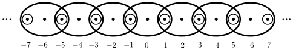

Anda mungkin bertanya mengapa kita tidak dapat mendefinisikan basis topologi pada himpunan \(X\) sebagai sembarang koleksi subhimpunan yang gabungannya adalah \(X\text{.}\) Pertimbangkan contoh \(X = \{a,b,c\}\) dan \(S = \{\{a\}, \{c\}, \{a,b\}, \{b,c\}\}\text{.}\)
(a)
Tentukan koleksi semua gabungan anggota-anggota \(S\text{.}\)
(b)
Jelaskan mengapa koleksi gabungan anggota-anggota \(S\text{,}\) bersama dengan himpunan kosong, bukan topologi pada \(X\text{.}\) Sifat basis yang mana yang tidak terpenuhi?
2.
Untuk setiap bilangan bulat \(a\text{,}\) misalkan \(a\Z = \{ka \mid k \in \Z\}\text{.}\) Artinya, \(a\Z\) adalah himpunan semua kelipatan bilangan bulat dari \(a\text{.}\)
(a)
Tunjukkan bahwa \(\{a\Z \mid a \in \Z\}\) merupakan basis untuk topologi \(\tau\) pada \(\Z\text{.}\)
Apakah himpunan bilangan bulat positif merupakan himpunan terbuka dalam ruang topologi \((\Z, \tau)\text{?}\) Jelaskan.
(c)
Apakah himpunan bilangan bulat ganjil terbuka dalam ruang topologi \((\Z, \tau)\text{?}\) Jelaskan.
(d)
Apakah himpunan \(\{0\} \cup \{x \in \Z \mid |x| \geq 5\}\) terbuka dalam ruang topologi \((\Z, \tau)\text{?}\) Jelaskan.
3.
Latihan ini merupakan generalisasi dari Latihan 2. Misalkan \(a\) dan \(b\) bilangan bulat dengan \(a \neq 0\text{.}\) Misalkan \(A_{a,b} = a\Z+b = \{ak + b \mid k \in \Z\}\text{.}\)
(a)
Tunjukkan bahwa \(\{A_{a,b} \mid a, b \in \Z, a \neq 0\}\) merupakan basis untuk topologi \(\tau\) pada \(\Z\text{.}\)
Jika \(B_1 = A_{a_1,b_1}\) dan \(B_2 = A_{a_2,b_2}\text{,}\) serta \(x \in B_1 \cap B_2\text{,}\) apa yang dapat kita katakan tentang \(A_{a_1a_2,x}\text{?}\)
(b)
Misalkan \(f : \Z \to \Z\) didefinisikan oleh \(f(n) = n + (-1)^n\text{.}\)
(i)
Buktikan bahwa \(f\) merupakan bijeksi.
(ii)
Jika \(O\) merupakan himpunan terbuka dalam \(\Z\text{,}\) apakah \(f(O)\) merupakan himpunan terbuka?
(iii)
Jika \(U\) merupakan himpunan terbuka dalam \(\Z\text{,}\) apakah \(f^{-1}(U)\) merupakan himpunan terbuka?
Misalkan \(\B = \{(-x,x) \mid x \in \R^+\}\text{.}\)
(a)
Tunjukkan bahwa \(\B\) merupakan basis untuk topologi \(\tau\) pada \(\R\text{.}\)
(b)
Setiap himpunan basis terbuka dalam \((\R, \tau_E)\text{.}\) Jadi kita dapat menanyakan apakah topologi \(\tau\) berbeda dari topologi Euklides yang dibangkitkan oleh semua interval terbuka dalam \(\R\text{.}\) Tunjukkan bahwa terdapat interval berbentuk \((a,b)\) yang terbuka dalam \((\R, d_E)\) tetapi bukan himpunan terbuka dalam \(\tau\text{.}\)
5.
Misalkan \(X = \{a,b,c\}\text{,}\) dan misalkan \(\tau_1 = \{\emptyset, \{a\}, \{a,b,c\}\}\) serta \(\tau_2 = \{\emptyset, \{a\}, \{b\}, \{a,b\}, \{a,b,c\}\}\text{.}\) Baik \(\tau_1\) maupun \(\tau_2\) merupakan topologi pada \(X\text{,}\) tetapi setiap anggota \(\tau_1\) juga merupakan anggota \(\tau_2\text{.}\) Jika hal ini terjadi, kita mengatakan bahwa \(\tau_1\) merupakan topologi yang lebih lemah daripada \(\tau_2\text{.}\)Latihan 4 memberikan sebuah contoh. Gunakan definisi formal pada bagian ringkasan dalam tugas-tugas berikut.
(a)
Apa topologi paling lemah pada suatu himpunan?
(b)
Apa topologi paling kuat pada suatu himpunan?
(c)
Jika suatu topologi pada \(X\) memuat semua himpunan satu titik, maka setiap subhimpunan terbuka dan topologi kita adalah topologi diskret. Selain itu, jika suatu topologi pada \(X\) memuat semua himpunan dua titik, maka untuk \(x\text{,}\)\(y\text{,}\) dan \(z\) dalam \(X\) berlaku \(\{x,y\} \cap \{x,z\} = \{x\}\) merupakan anggota topologi dan sekali lagi kita memperoleh topologi diskret. Pertimbangkan topologi
Satu-satunya himpunan yang bukan anggota \(\sigma\) adalah \(\{c\}\) dan \(\{b,c\}\text{,}\) tetapi menambahkan salah satu himpunan tersebut ke \(\sigma\) akan menghasilkan topologi diskret. Jadi \(\sigma\) merupakan topologi paling kuat yang mungkin selain topologi diskret.
(d)
Misalkan \(X = \{a,b,c\}\text{.}\) Adakah topologi \(\sigma\) pada \(X\) sedemikian sehingga \(\sigma\) bukan topologi diskret tetapi tidak ada topologi yang lebih kuat pada \(X\) selain topologi diskret? Jelaskan.
(e)
Misalkan \(X = \{a,b,c\}\text{.}\) Adakah topologi \(\gamma\) pada \(X\) sedemikian sehingga \(\gamma\) bukan topologi indiskret tetapi tidak ada topologi yang lebih lemah pada \(X\) selain topologi indiskret? Jelaskan.
(f)
Secara umum, mungkin terdapat banyak basis berbeda untuk suatu topologi, dan dua basis yang berbeda dapat memiliki kardinalitas yang sama. Hal ini tidak berlaku untuk ruang topologi berhingga. Misalkan \(X\) himpunan berhingga dan \(\tau\) topologi pada \(X\text{.}\) Dalam latihan ini kita akan menunjukkan bahwa terdapat basis minimal untuk topologi \(\tau\text{.}\) Artinya, terdapat basis \(\B_{\text{ min } }\) dari \(\tau\) sedemikian sehingga jika \(\B\) adalah basis lain untuk \(\tau\text{,}\) maka \(\B_{\text{ min } } \subseteq \B\text{.}\)
(i)
Jika \(x \in X\text{,}\) misalkan \(U_x\) adalah irisan semua himpunan terbuka yang memuat \(x\text{.}\) Jelaskan mengapa \(U_x\) merupakan himpunan terbuka.
(ii)
Misalkan \(\B_{\text{min}} = \{U_x \mid x \in X\}\text{.}\) Tunjukkan bahwa \(\B_{\text{min}}\) merupakan basis untuk \(\tau\text{.}\)
(iii)
Tunjukkan bahwa jika \(\B\) merupakan basis untuk \(\tau\text{,}\) maka \(\B_{\text{min}} \subseteq \B\text{.}\)
Anda boleh mengasumsikan bahwa \(\tau\) merupakan topologi pada \(X\text{.}\) Tentukan basis minimal tunggal untuk \(\tau\text{.}\)
(g)
Sebanyak \(9\) topologi sasaran yang berbeda pada \(X = \{a,b,c\}\) dicantumkan setelah topologi indiskret sebagai titik awal. Setiap topologi sasaran berada dalam satu atau lebih urutan topologi yang disusun menurut kekasaran. Untuk setiap topologi \(\tau\) pada butir 2--10, tuliskan urutan topologi terpanjang yang dimulai dari \(\{\emptyset, X\} \subset \tau\text{,}\) disusun menurut kekasaran.
Untuk setiap \(n \in \Z^+\text{,}\) misalkan \(O_n = \{n, n+1, n+2, \ldots\}\text{.}\) Misalkan \(\tau = \{\emptyset, O_1, O_2, O_3, \ldots\}\text{.}\) Tunjukkan bahwa \((\Z^+, \tau)\) merupakan ruang topologi.
8.
Misalkan \(A, B\) dua subhimpunan dalam ruang topologi \(X\text{.}\) Apa yang dapat Anda katakan tentang hubungan antara \(\Int(A\cap B), \Int(A\cup B)\) dan \(\Int(A)\cap \Int(B), \Int(A)\cup \Int(B)\text{,}\) masing-masing pasangan tersebut? Verifikasi hasil Anda.
9.
Misalkan \(X\) himpunan tak kosong dan \(p\) unsur \(X\text{.}\) Misalkan \(\tau_p\) koleksi subhimpunan \(X\) yang terdiri dari \(\emptyset\text{,}\)\(X\text{,}\) dan semua subhimpunan \(X\) yang memuat \(p\text{.}\) Tunjukkan bahwa \(\tau_p\) merupakan topologi pada \(X\text{.}\) (Topologi ini disebut topologi titik tertentu).
10.
Misalkan \(X\) himpunan tak kosong dan \(p\) unsur \(X\text{.}\) Misalkan \(\tau_{\overline{p}}\) koleksi subhimpunan \(X\) yang terdiri dari \(\emptyset\text{,}\)\(X\text{,}\) dan semua subhimpunan \(X\) yang tidak memuat \(p\text{.}\) Tunjukkan bahwa \(\tau_{\overline{p}}\) merupakan topologi pada \(X\text{.}\) (Topologi ini disebut topologi titik yang dikecualikan.)
11.
Salah satu penerapan topologi adalah pada tampilan citra digital, seperti layar komputer. Tampilan citra digital merupakan susunan persegi panjang piksel dan dapat dimodelkan menggunakan bidang digital. Dalam latihan ini kita mempertimbangkan penyederhanaan bidang digital — garis digital — yang kita pandang sebagai koleksi piksel satu dimensi dengan panjang tak berhingga. Untuk setiap \(n \in \Z\) kita definisikan
Himpunan-himpunan \(B(n)\) diilustrasikan dalam Gambar 12.14.

Gambar12.14.Topologi garis digital.
Dalam latihan ini kita mengeksplorasi koleksi \(\B = \{B(n)\}\text{.}\)
(a)
Tunjukkan bahwa koleksi \(\B = \{B(n)\}\) merupakan basis untuk topologi pada \(\Z\text{.}\) (Topologi yang dihasilkan disebut topologi garis digital \(\tau_{dl}\text{.}\) 4 Garis digital memodelkan susunan piksel satu dimensi, dengan bilangan bulat genap sebagai piksel dan bilangan bulat ganjil sebagai batas antar piksel. Informasi tentang bidang digital dapat ditemukan dalam Bab 20.)
(b)
Tentukan himpunan mana dari himpunan-himpunan berikut yang terbuka dalam topologi garis digital:
(i)
\(\{0\}\)
(ii)
\(\{1\}\)
(iii)
\(\{0, 2\}\)
(iv)
\(\{1, 2, 3, 4, 5\}\)
(v)
\(\Z^+\)
(vi)
Himpunan bilangan bulat ganjil.
12.
Misalkan \(n\) bilangan bulat positif dan \(\mathcal{P}_n\) koleksi semua polinom dalam \(n\) variabel real \(x_1\text{,}\)\(x_2\text{,}\)\(\ldots\text{,}\)\(x_n\text{.}\) Sebagai contoh khusus, polinom
merupakan anggota \(\mathcal{P}_3\text{.}\) Jika \(f(x_1, x_2, \ldots, x_n)\) merupakan anggota \(\mathcal{P}_n\text{,}\) misalkan \(Z(f)\) himpunan nol polinom \(f\text{.}\) Artinya,
Perhatikan bahwa \(Z(f)\) merupakan subhimpunan dari \(\R^n\text{.}\) Sebagai contoh, jika \(n=2\) dan \(f(x_1,x_2) = x_1^2 - x_2\text{,}\) maka \(Z(f)\) adalah himpunan pasangan terurut dalam \(\R^2\) yang memenuhi \(x_1^2-x_2 = 0\text{,}\) atau \(x_2 = x_1^2\text{.}\) Ini adalah grafik parabola \(y=x^2\) pada bidang.
(a)
Deskripsikan \(Z(f)\) dalam \(\R^2\) jika \(f(x_1,x_2) = x_1^2 - 1\text{.}\)
(b)
Jika \(E\) merupakan himpunan polinom dalam \(\mathcal{P}_n\text{,}\) kita definisikan \(Z(E) = \bigcap_{f \in E} Z(f)\) sebagai himpunan nol bersama semua polinom dalam \(E\text{.}\) Deskripsikan \(Z(E)\) jika \(E = \{x_1+x_2+x_3, x_1-x_2-x_3, 3x_1+x_2+x_3\}\) dalam \(\R^3\text{.}\)
(c)
Misalkan \(\mathcal{B}\) himpunan komplemen dari himpunan-himpunan \(Z(f)\) untuk \(f \in \mathcal{P}_n\text{.}\) Tunjukkan bahwa \(\mathcal{B}\) merupakan basis untuk topologi pada \(\R^n\text{.}\) Topologi yang dihasilkan disebut topologi Zariski.
(d)
Apakah himpunan \(S = \{(x_1,x_2) \in \R^2 \mid x_1 = 0 \text{ atau } x_2 = 0\}\) merupakan himpunan terbuka dalam \(\R^2\) dengan topologi Zariski? Jelaskan.
(e)
Jelaskan mengapa topologi Zariski ketika \(n=1\) sama dengan topologi kofinit pada \(\R\text{.}\) Artinya, tunjukkan bahwa setiap himpunan yang terbuka dalam topologi kofinit terbuka dalam topologi Zariski dan setiap himpunan yang terbuka dalam topologi Zariski terbuka dalam topologi kofinit.
13.
Untuk setiap pernyataan berikut, jawablah benar jika pernyataan tersebut selalu benar. Jika pernyataan hanya kadang-kadang benar atau tidak pernah benar, jawablah salah dan berikan contoh konkret yang menunjukkan bahwa pernyataan tersebut salah. Jika suatu pernyataan benar, jelaskan alasannya.
(a)
Himpunan \(\{\emptyset, \{a,b\}, \{a,b,d,f\}, \{d,f\},X\}\) merupakan topologi pada himpunan \(X = \{a,b,c,d,e,f\}\text{.}\)
(b)
Himpunan \(\Z\) merupakan subhimpunan terbuka dari \(\R\) menggunakan topologi komplemen berhingga \(\tau_{FC}\) pada \(\R\text{.}\)
(c)
Himpunan \(\mathcal{B} = \{\{b\},\{c\}, \{a,b\}, \{b,c,d\}\}\) merupakan basis untuk topologi \(\tau\) pada himpunan \(X = \{a,b,c,d\}\text{,}\) dengan
Jika \(\tau_1\) dan \(\tau_2\) merupakan topologi pada ruang \(X\text{,}\) maka \(\tau_1 \cup \tau_2\) juga merupakan topologi pada \(X\text{.}\)
(g)
Jika \(\tau_1\) dan \(\tau_2\) merupakan topologi pada ruang \(X\text{,}\) maka \(\tau_1 \cap \tau_2\) juga merupakan topologi pada \(X\text{.}\)
Topologi garis digital ini memiliki penerapan dalam pemrosesan digital — lihat Introduction to Topology: Pure and Applied oleh Colin Adams dan Robert Franzosa, Pearson Education, Inc., 2008, Bagian 1.4 dan 11.3. Himpunan \(\Z\) dengan topologi garis digital disebut garis digital.